06 Chapter 06 — Calibration I: Homography, Intrinsics, Distortion
Why pixels lie, how the camera model works, and the Z-limit that forces multi-view
6.1 The Order of Operations: Calibrate Before You Detect
Every metric in this book — spacing, line speed, kitchen proximity, defensive retreat — is measured in physical units. None of them exist in the raw frame. The pixel is a witness, not the verdict: it lies about distance (perspective), lies about position (lens distortion), and lies about height (it has no Z). Calibration is the machinery that recovers truth from pixels, and it must happen before any downstream claim.
The book's own evidence shows why the order matters. Our E05 homography reports 3.82cm reprojection error on the pb-003 fixture; the original claim presented it as a single number. The honest reading: with exactly four clicked points, a DLT homography maps those four points exactly — the 3.82cm is the click-noise and click-placement error, not a general validation number. Extrapolating it to any court or any lens is the calibration fallacy this chapter names.
The two sports make the ordering non-negotiable in different ways. On the pickleball rig (pb-003, a fixed elevated camera over a 13.41 × 6.10m court) you calibrate once, before the first frame is analyzed, and every detection afterwards inherits that map. On the rugby league broadcast feed (nrl-001, a PTZ camera over a 100 × 68m field) the map expires every time the camera pans or zooms — E08 measured 9.76 px/frame of camera drift on that clip — so calibration is not a preprocessing step but a per-frame process running inside the pipeline. Either way the rule is identical: nothing measured in metres may be computed from pixels that have not passed through a calibrated map first.
6.2 The Camera Model: From 3D World to Pixel
The full projection chain is the pinhole model with extrinsics:
$$s \begin{bmatrix} u \\ v \\ 1 \end{bmatrix} = \mathbf{K} \begin{bmatrix} \mathbf{R} | \mathbf{t} \end{bmatrix} \begin{bmatrix} X \\ Y \\ Z \\ 1 \end{bmatrix}$$
where $\mathbf{K}$ is the intrinsics (focal fx/fy, principal point cx/cy = 4 parameters), $\mathbf{R}|\mathbf{t}$ the extrinsics (6 parameters), and the total is 10 degrees of freedom. A planar homography $\mathbf{H}$ is the 8-parameter special case when every world point lies on one plane ($Z=0$): it is not a camera model, it is a plane-to-plane map. That distinction is everything: homography answers "where on the floor", never "where in the room".
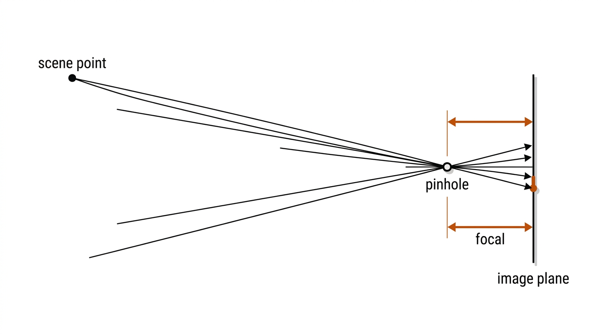
The pinhole model deserves its name literally: the ideal camera is a box with an infinitesimal hole, and each scene point casts exactly one ray through the hole onto the sensor plane, inverted. Real cameras replace the hole with a lens (which is why §6.3 exists), but the geometry survives: a pixel coordinate $(u, v)$ identifies a ray, not a point. Depth along that ray — the $s$ in the equation — is unrecoverable from a single view. Everything downstream in this book lives with that fact.
The chain decomposes into two stages with very different provenance. The intrinsics $\mathbf{K}$ describe the camera itself: $f_x, f_y$ are the focal length expressed in pixels (physical focal divided by pixel pitch), and $(c_x, c_y)$ is the principal point — near the image center, never exactly on it; skew is zero for any modern sensor. The extrinsics $[\mathbf{R}|\mathbf{t}]$ describe placement: three rotation parameters and three translation parameters locating the world frame relative to the camera. Intrinsics survive until you change lens, zoom, or crop; extrinsics survive until the camera moves. The degrees of freedom stack as follows:
| Stage | Parameters | DoF | Comes from |
|---|---|---|---|
| Intrinsics $\mathbf{K}$ | $f_x, f_y, c_x, c_y$ | 4 | Chessboard calibration (§6.5) |
| Lens distortion | $k_1, k_2, p_1, p_2$ (+$k_3$) | 4–5 | Chessboard calibration (§6.5) |
| Extrinsics $\mathbf{R}|\mathbf{t}$ | 3 rotation + 3 translation | 6 | Plane pose, implied by the homography |
| Planar homography $\mathbf{H}$ | 3×3 up to scale | 8 | 4+ point pairs (§6.4) |
A homography is the intrinsics-and-extrinsics chain restricted to $Z=0$: setting the world Z column of $[\mathbf{R}|\mathbf{t}]$ aside, $\mathbf{H} = \mathbf{K}[\mathbf{r}_1\ \mathbf{r}_2\ \mathbf{t}]$ — 3×3, defined up to scale, 8 degrees of freedom. For the fixed pickleball rig we never solve $\mathbf{K}$, $\mathbf{R}$, $\mathbf{t}$ separately; we solve $\mathbf{H}$ directly and, when Chapter 14 needs it, decompose it back.
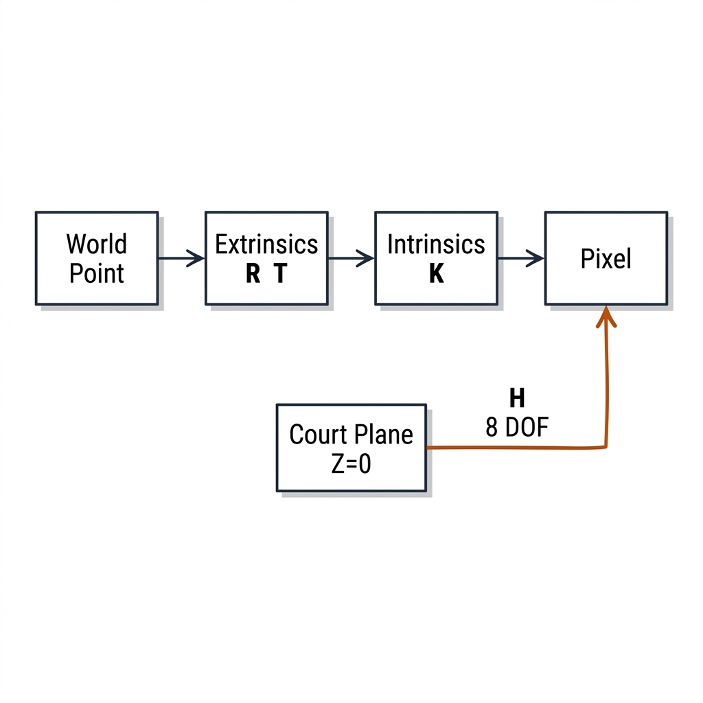
Worked example — pb-003 intrinsics without a chessboard. From the Chapter 4 rig: phone main camera, 3840×2160, 24mm-equivalent field of view. The horizontal FOV of 73.7° gives a pixel focal directly:
$$f_x = \frac{W}{2\tan(\text{FOV}_h/2)} = \frac{3840}{2\tan(36.85°)} \approx 2564\ \text{px}$$
with $c_x = 1920$, $c_y = 1080$, and $f_y \approx f_x$ for square pixels. The rig's 2× telephoto crop doubles that to ≈5128 px. This guess is good to a few percent — adequate for back-of-envelope projection, not for measurement, because it assumes zero distortion and an exact crop. The chessboard workflow (§6.5) replaces it with measured values.
Rugby league is the opposite regime. A broadcast PTZ camera's intrinsics are not fixed: focal length is a free parameter per frame because the operator zooms to follow play. Nothing about $\mathbf{K}$ can be calibrated once on the sideline; each frame of nrl-001 needs its own focal estimate, which is precisely why the broadcast-calibration literature (TVCalib, PnLCalib, and the 2026 unified-registration line) treats calibration as per-frame optimization rather than one-shot fitting. Chapter 7 takes that problem up in full; this chapter's job is to make the fixed-camera case exact and to name its limits honestly.
One discipline note the lab learned the hard way: units. $\mathbf{K}$ is in pixels, $\mathbf{t}$ in metres, the court model in metres. Every historical lab bug that mixed pixel-focals with metre-focals produced silent 1000× errors; assert units at every interface. And never hand-roll the 4×4 matrix chain — project with cv2.projectPoints, back-project image→court with $\mathbf{H}^{-1}$, and let OpenCV own the arithmetic.
6.3 Lens Distortion: The 26cm Error Nobody Measures
Real lenses bend light. The Brown-Conrady model has five coefficients (radial $k_1, k_2, k_3$ and tangential $p_1, p_2$) and the displacement grows cubically with the distance from the image center. The consequence is not academic: on the C04 rig (4.5m pole, 13.41m court) a modest $k_1 = -0.3$ produces roughly 26cm of projected error at the court scale — an order of magnitude larger than E05's 3.82cm.
The model acts on the normalized image coordinates $(x_n, y_n) = ((u-c_x)/f_x,\ (v-c_y)/f_y)$ before the pinhole projection. With $r^2 = x_n^2 + y_n^2$:
$$x_d = x_n(1 + k_1 r^2 + k_2 r^4 + k_3 r^6) + \big[2p_1 x_n y_n + p_2(r^2 + 2x_n^2)\big]$$ $$y_d = y_n(1 + k_1 r^2 + k_2 r^4 + k_3 r^6) + \big[p_1(r^2 + 2y_n^2) + 2p_2 x_n y_n\big]$$
The radial terms ($k_1 < 0$ = barrel, typical of wide lenses; $k_1 > 0$ = pincushion, typical of tele) are symmetric about the principal point; the tangential terms come from lens elements not perfectly parallel to the sensor and usually run 5–10× smaller — drop them only if your chessboard RMS says so. Because the displacement scales as $k_1 r^3$, it is a field-position error: negligible at the center, brutal at the edges. Representative lens classes make the growth concrete:
| $k_1$ class | $r = 0.25$ | $r = 0.5$ | $r = 0.75$ | $r = 1.0$ |
|---|---|---|---|---|
| −0.05 (phone main class) | −0.08% | −0.63% | −2.1% | −5% |
| −0.15 (mild wide) | −0.23% | −1.9% | −6.4% | −15% |
| −0.30 (action-cam wide class) | −0.47% | −3.75% | −12.8% | −30% |
Convert to court error on the C04 rig (6.4 mm/px at the far baseline, ~2200 px half-diagonal): at $r=0.5$ a $k_1=-0.30$ lens shifts a pixel by ~41 px ≈ 26 cm at court scale. Against that, E05's 3.82 cm homography RMSE is noise — and E05's 3.82cm was measured at the court center, where distortion displacement is smallest. A foot-fault call at the far corner lives at the edge, exactly where the uncorrected lens is worst.
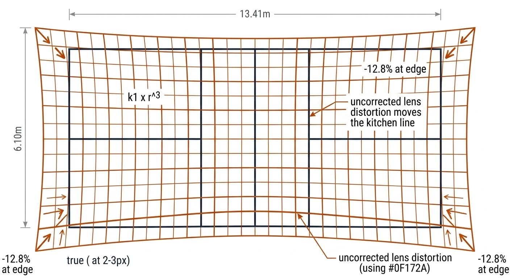
The field's verdict is now settled: the CVSports@CVPR-2026 Best Paper ("Unified Sports Field Registration with Lens Distortion Modeling", Theiner et al.) performs joint registration with distortion estimation, keypoint-free and sport-agnostic. When the flagship 2026 award goes to distortion modeling, treating it as optional polish is no longer defensible.
Our lab quantifies it. With a typical compact-camera barrel distortion ($k_1 = -0.15$), the frame corners move 130px under undistortion. A homography fitted with 3.82cm error at the center can misproject the court edges by that margin — exactly where the kitchen line is.
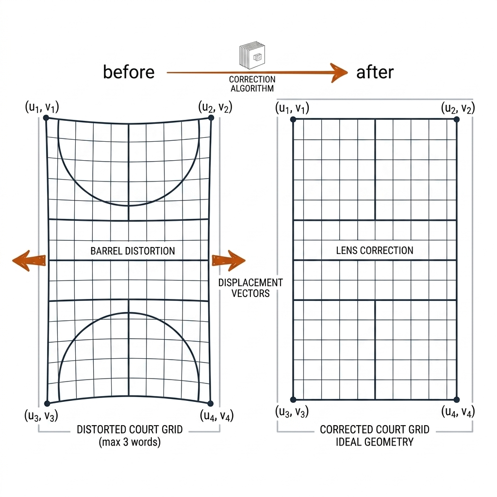
Pipeline placement is a one-way door: undistort first, homography second. Correct the reference points with cv2.undistortPoints (cheaper than resampling whole frames, and microseconds on the lab machine) and only then run DLT. Fit $\mathbf{H}$ on distorted pixels and you bake a cubic, field-dependent error into the map that no number of reference points can absorb. For broadcast rugby the feed is usually produced — lens-corrected at the truck — before it reaches you [verify for nrl-001]; for phone and action-cam pickleball rigs it never is.
Rugby adds a second twist: broadcast zoom lenses at long focal lengths drift toward pincushion, and the distortion changes with zoom. A distortion estimate made at one zoom stop does not transfer to another — one more reason the per-frame joint-estimation methods exist. The honest budget for both sports is the same shape: correct what the chessboard measured, then let the homography absorb only what remains.

6.4 Direct Linear Transform and the Reprojection Error Discipline
The DLT solves for $\mathbf{H}$ from ≥4 non-collinear correspondences. Planar court points $\mathbf{X}_i = (X_i, Y_i, 1)^\top$ and their pixel observations $\mathbf{x}_i = (u_i, v_i, 1)^\top$ satisfy $\mathbf{x}_i \sim \mathbf{H}\mathbf{X}_i$; eliminating the scale via the cross product gives two independent equations per point pair:
$$\begin{bmatrix} \mathbf{0}^\top & -\mathbf{X}_i^\top & v_i \mathbf{X}_i^\top \\ \mathbf{X}_i^\top & \mathbf{0}^\top & -u_i \mathbf{X}_i^\top \end{bmatrix} \mathbf{h} = 0$$
Stacking $N \ge 4$ pairs yields $A\mathbf{h} = 0$ with $A$ of shape $2N \times 9$; the solution is the right singular vector of $A$ with the smallest singular value, reshaped to 3×3. With exactly 4 points the system is determined and the fit is exact; with more, SVD gives the least-squares solution and RANSAC rejects the outliers.
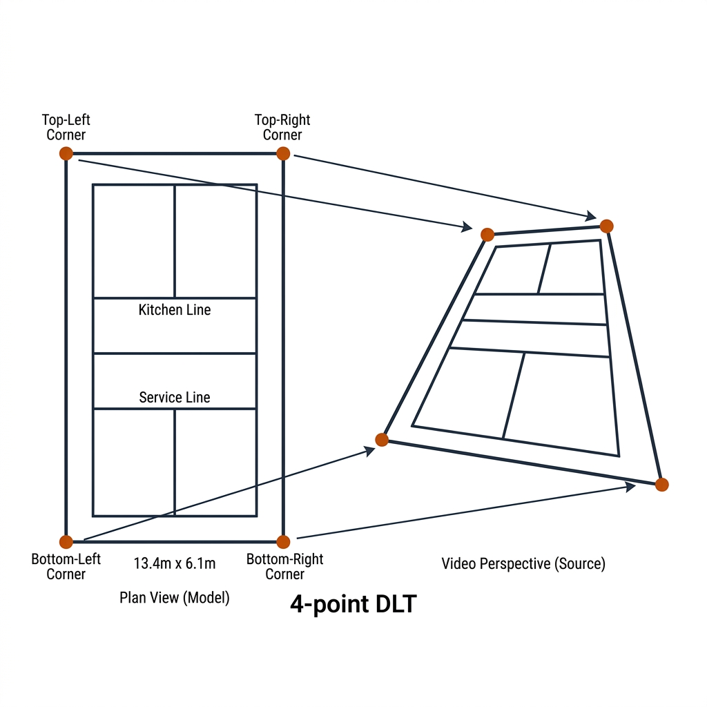
Two steps practitioners skip and shouldn't. First, Hartley normalization: translate each point set to centroid zero and scale so the mean distance to the origin is $\sqrt{2}$, before the SVD, then denormalize after. Unnormalized DLT on 4K-pixel coordinates conditions $A$ to roughly $10^6$ and silently costs about a decimal digit of accuracy (Hartley & Zisserman, §4.4). Second, nonlinear refinement: DLT minimizes an algebraic error, not geometric reprojection error; refine with Levenberg–Marquardt on $\sum_i d(\mathbf{x}_i, \mathbf{H}\mathbf{X}_i)^2$ starting from the DLT solution (cv2.findHomography with method=0 does this when given >4 points [verify the LM default per OpenCV version — behavior differs across 4.x releases]).
Worked: E05 on pb-003. Four hand-clicked corners on an undistorted frame, 3.82cm RMSE at court center. Put the number in units readers feel: 3.82cm is 0.285% of court length and 0.63% of court width; at 6.4 mm/px (far baseline) the residual is ~6 px, consistent with hand-clicking precision of ±a few pixels per corner. The manual fit is click-noise-limited, not model-limited. With only four points there is zero redundancy: a 3-px misclick on one corner redistributes across the whole map and leaves no residual signal to detect it. That is why E11's automated pipeline — 12.4 keypoints per frame, 24.8 equations for 8 unknowns, 3× redundancy, RANSAC-visible mistakes — reports 4.65cm: a slightly worse headline number than E05's best case, and a more honest one, with 98.4% valid frames at 11.2 ms/frame.
The sanity check every reader should run: project the four fitted corners back to court coordinates with $\mathbf{H}^{-1}$. If they do not land within a few centimetres of (0,0), (13.41,0), (13.41,6.10), (0,6.10), the fit is wrong no matter what the global RMSE says.
RANSAC's iteration count is computed, not chosen. For a 4-point minimal sample at 99% success probability, $N = \ln(1-p)/\ln(1-w^4)$ where $w$ is the inlier fraction:
| Inlier fraction $w$ | Iterations $N$ (p = 0.99) |
|---|---|
| 0.9 | 8 |
| 0.7 | 34 |
| 0.5 | 72 |
| 0.3 | 561 |
So "a few hundred iterations" is the computed cost of surviving a 50–70%-outlier keypoint detector — a foot on the kitchen line classified as a corner, a shadow edge as a junction. Set ransacReprojThreshold in pixels from your measured click or detector noise (~3 px for the 4K end-cam), not from vibes.
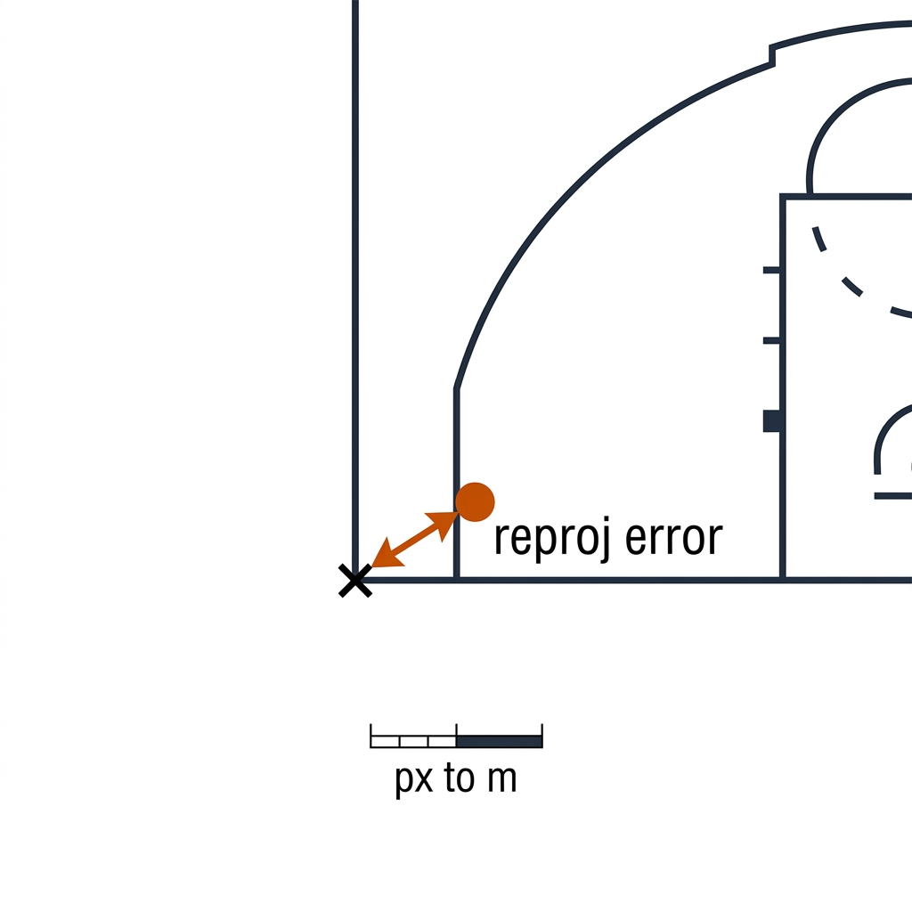
Global RMSE lies by averaging. A fit can post 3cm global while the far-left corner is off 12cm and the center off 1cm — and the corner error is what loses a foot-fault call. Outside the convex hull of the calibration points, error grows roughly linearly with distance: a 4-corner pickleball fit understates error for a player a metre behind the baseline, and a rugby fit anchored on two visible transverse lines extrapolates across 30+ metres of field and degrades accordingly. Squared loss skews too: one 20cm outlier contributes as much to RMSE as twenty-seven 3.8cm inliers. The reporting discipline this book enforces everywhere:
- Per-corner error table, not just global RMSE (our lab emits exactly that).
- Median and 95th percentile alongside RMSE.
- Named evaluation region (center vs edges — the kitchen is at the edge).
- The validation split: if points 1-4 fit H, points 5-8 must validate it. A fitting residual is not validation error.
- Version pinning: OpenCV 5.0's findHomography behavior differs from 4.x; record it.
6.5 The Chessboard Workflow
The ground-truth generator for intrinsics: print a chessboard, photograph it at capture distance in the capture conditions (zoom, crop, lighting), run cv2.calibrateCamera. One afternoon per camera, and the highest accuracy-per-dollar step in this book. The recipe that survives contact with the field:
- Print a 9×6 inner-corner board on A3, matte, on rigid backing — a warped board injects fake distortion into the fit. Use the ChArUco variant if corners will ever be partially occluded (outdoor glare).
- Capture 15–25 stills covering the whole field of view: all four edges especially, the center, tilted ±30–45° on each axis. Edge coverage is what constrains $k_1$ — a center-only dataset returns $k_1 \approx 0$ and lies confidently.
- Detect and refine:
findChessboardCorners→cornerSubPixto ~0.1 px. - Calibrate with five coefficients $(k_1, k_2, p_1, p_2, k_3)$.
- Acceptance: RMS reprojection error < 0.5 px for phone/lab lenses (good runs land 0.1–0.3 px). Above 1 px, re-shoot — the board moved or focus drifted. Report the RMS, not "it worked".
- Freeze per rig, per mode. The phone's 1× and 2× crop are different $\mathbf{K}$; an action cam's Wide and Linear modes differ (Linear is already software-undistorted — do not double-correct [verify residual $k_1$ on your unit]). Store as YAML per (device, mode) in the capture manifest.
- Use:
undistortPointson reference points before DLT (§6.3), orgetOptimalNewCameraMatrix+undistortfor whole frames going to human viewers.
The lab recipe in code:
import cv2
import numpy as np
def calibrate_from_chessboard(pattern_size, square_size_m, images):
"""images: list of paths with a chessboard photographed in capture conditions."""
objp = np.zeros((pattern_size[0] * pattern_size[1], 3), np.float32)
objp[:, :2] = np.mgrid[0:pattern_size[0], 0:pattern_size[1]].T.reshape(-1, 2)
objp *= square_size_m
obj_points, img_points = [], []
for path in images:
img = cv2.imread(path)
gray = cv2.cvtColor(img, cv2.COLOR_BGR2GRAY)
ret, corners = cv2.findChessboardCorners(gray, pattern_size, None)
if ret:
obj_points.append(objp)
img_points.append(corners)
ret, K, dist, rvecs, tvecs = cv2.calibrateCamera(
obj_points, img_points, gray.shape[::-1], None, None)
return K, dist # K = intrinsics; dist = [k1, k2, p1, p2, k3]
Then: undistort the frames BEFORE homography, and re-measure. The 130px corner motion from our distortion demo becomes part of the calibration budget. The same workflow serves both sports' capture rigs — the sideline phone filming pickleball practice and any fixed camera you control near a rugby ground. What it cannot reach is the broadcast feed itself: nobody hands you a chessboard session with the host broadcaster's lens, which is why rugby broadcast calibration falls back to the field markings as the reference geometry (§6.7).
6.6 Automated Court Keypoints: The Detector Option
Manual clicking works for one fixture; an automated keypoint model is the production path. Three layers should never be conflated. OpenCV (Apache-2.0) is the solver layer — DLT, RANSAC, LM refinement, chessboard calibration, undistortion — no learned content, never obsolete. MediaPipe finds person landmarks, not line junctions; practitioners routinely reach for it first and discover it answers a different question. The deep court/field keypoint models are the detector layer that finds the reference points DLT consumes — E11's 12.4 keypoints/frame comes from this layer. The verified landscape (licenses read from the repos on 2026-08-30):
| Method | License | M4 Max | Notes |
|---|---|---|---|
| TVCalib (WACV 2023) | MIT | ⚠️ | Differentiable segment correspondence; the book's E11 baseline (12.4 kps/frame, 4.65cm RMSE, 11.2ms/frame); optimization-loop solvers are CUDA-tuned, so throughput runs go to Colab |
| PnLCalib (CVIU 2026, Gutierrez-Perez & Agudo) | GPL-2.0 | ⛔ eval-only | Points+lines optimization; copyleft — evaluation-only for a commercial repo |
| roboflow/sports | MIT | ✅ | Pitch/court keypoint models; the transferable pattern |
| sn-calibration (SoccerNet) | NO LICENSE FILE | ⚠️ | Cite, don't vendor — the absence is itself a decision |
| Theiner 2026 (CVSports best paper) | code [verify] | ⚠️ | Joint registration + distortion; the field's trajectory |
The SoccerNet lineage matters beyond soccer: it defined the task framing (registration to a fixed field model), the metrics (JaC@5 = reprojection Jaccard within 5 px), and the leaderboards the newer methods compete on. Rugby broadcast calibration inherits that framing directly — a PTZ feed over a 100 × 68m field is exactly the SoccerNet problem with different markings, which is why the rugby side of this book speaks the same solver vocabulary even though no rugby-specific calibration benchmark exists [verify]. License discipline is part of model selection in this book: MIT (TVCalib, roboflow/sports) is forkable; GPL-2.0 (PnLCalib) is read-and-quote only; no license file (sn-calibration) means cite and link, never redistribute.
6.7 Pickleball vs Rugby: Reference Availability
The homography is only as good as the visible reference geometry, and the two sports are opposites. The availability of calibration references is the structural difference:
| Property | Pickleball (pb-003) | Rugby League (nrl-001) |
|---|---|---|
| Anchors per frame | 10+ coplanar intersections (court lines, T-junctions) | 2-3 line segments (broadcast framing) |
| Geometry type | Point correspondences → DLT | Line correspondences → PnL/segment methods |
| Camera | Fixed → single H once | Per-frame H_t (focal changes with zoom) |
| Lens distortion | Small (fixed wide lens) | Large on zoom lenses at long focal |
| Error profile | Interpolation inside the hull; detector-noise-limited | Extrapolation outside the hull; anchor-scarcity-limited |
Pickleball, fixed camera. The entire court is in frame, always: 4 corners, 4 kitchen-line/sideline junctions, 2 center-service-line ends, net-post bases — 10+ coplanar anchors, never all occluded at once, known to the millimetre from the USAP rulebook (13.41 × 6.10m, NVZ at 2.13m). Redundancy is free, and E11 exploits it: 12.4 detected keypoints per frame feed an over-determined fit every frame. The pickleball calibration problem is detector quality and distortion, not availability.
Rugby league, broadcast PTZ. The camera pans, tilts, and zooms to follow play, so the visible slice of the field changes every frame. A typical tight-play frame shows 2–3 transverse lines, one touch line, and zero clean junctions — not enough points for DLT at all. The 20m/40m uprights and crossbar are visible but non-coplanar: useless for a ground-plane $\mathbf{H}$. Four consequences follow:
- Homography must be per-frame — zoom kills any static $\mathbf{H}$, and focal length becomes a free parameter per frame. Hence calibration-as-optimization (TVCalib, Theiner 2026) rather than one-shot DLT.
- Lines, not points, are the reliable primitives — exactly why PnLCalib's points-and-lines formulation exists. A line correspondence contributes constraints without any junction being visible.
- Error is extrapolation-dominated (§6.4): anchors cluster near the ball while evaluated positions sit outside the hull. Rugby RMSE numbers must name their region or they are marketing.
- GMC is the cheap stand-in. E14's global-motion compensation (295→286 IDs, +3.1% IDF1-class gain) stabilizes the tracking stage without solving registration at all. The honest ladder is GMC < per-frame homography < full joint calibration, and this book shows where each rung stops paying.
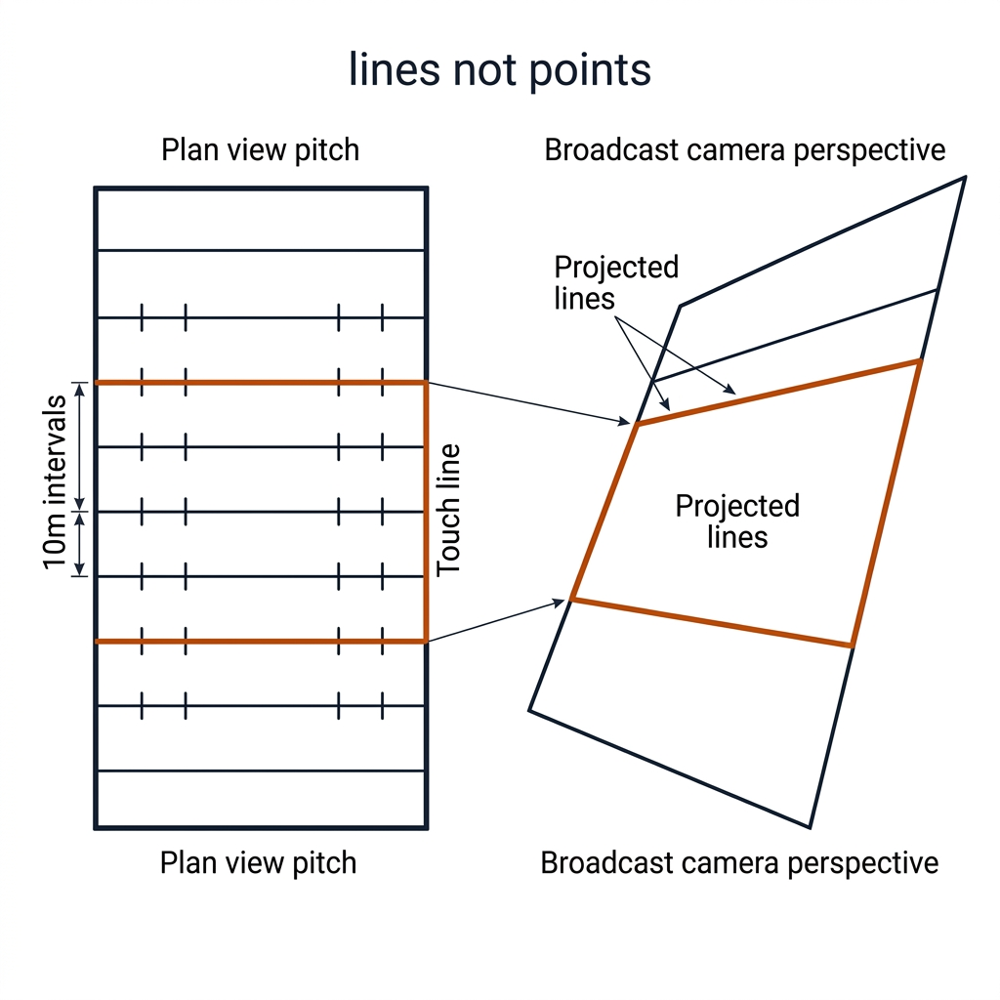
6.8 The Z-Limit: Why Homography Cannot Call a Line
This is the chapter's deep lesson, and the lab proves it numerically. A ball flying 0.9m above the court is not on the plane the homography maps. Project the ball's pixel through the ground-plane homography and you get the wrong court coordinate. The error grows with height: on the 4.5m rig, the mislocalization is 1.0m at z=0.5m, 2.3m at z=1.0m, 7.6m at z=2.2m — and it diverges as the ball approaches camera height.
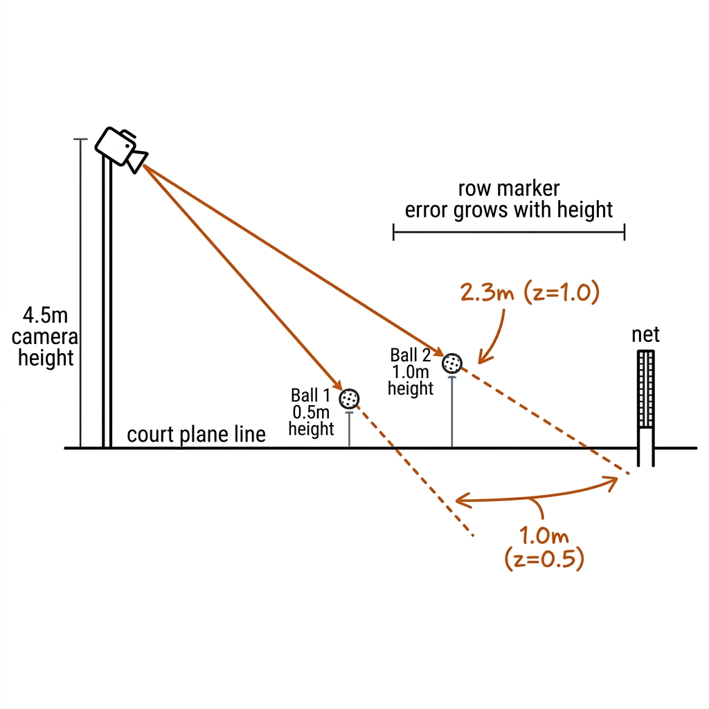
Equation: the true ground point of a ball at height z is displaced from the projected point by
$$D' = \frac{D \cdot H}{H - z}$$
where H is camera height, D the ball's distance. Worked on the book's rig ($H = 4.5$m end-cam, target at $D = 8$m): a bounce ($z=0$) is exact; a ball at 0.5m appears at 9.0m (1.0m wrong); at 1.0m, at 10.29m (2.29m wrong); at smash-contact height 2.2m, at 15.65m — 7.65m of phantom court. At $z \to H$ the apparent position runs off to infinity: the ray never meets the ground, and above camera height the mapping reappears behind the camera. No amount of RMSE discipline, RANSAC, or distortion correction fixes this. It is a dimensional failure, not a statistical one: a planar homography answers "where on the court would this pixel be if it were on the ground", and for the ball the honest answer is "nowhere".
This is why bounce points, line calls, and any ball-vs-plane question require multiple views (chapter 14). The rule this book enforces: players get homography coordinates (feet on the plane); the ball gets pixels until Chapter 14. Feeding projected ball "positions" into speed or placement stats without this caveat is the single most common silent error in amateur pickleball analytics. Rugby pays the same toll on the high ball — a bomb hanging above the 20m line projects metres away from its true field position on any single broadcast view, and a kick that lands in touch will be reported in-field by a ground-plane map. A single calibrated camera calls court zones, not lines.
6.8b The 10 Use Cases: Applied Calibration Framework
The use cases below are the applied bridge from the camera model above to the two sports. They follow four categories: A. Fitting the Map (UC 01-03), B. The Lens and the Moving Camera (UC 04-05), C. Measuring Honestly (UC 06-07), and D. Automation and Beyond the Ground Plane (UC 08-10). Each case pairs a pickleball and a rugby league application so the pipeline transfers, and each carries its evidence label: measured (book experiment), source-backed (paper), or [verify] (practitioner model, not yet established in literature).
Category A: Fitting the Map (UC 01-03)
UC 01 — Four-Point DLT on the Pickleball Court (Fixed Rig)
A fixed end-cam over a pickleball court must turn pixels into metres exactly once, before any analytics run — and the four-corner hand-clicked fit is the baseline every club can afford. The mechanism is §6.4 made concrete: click the four rulebook corners (0,0), (13.41,0), (13.41,6.10), (0,6.10) metres on an undistorted frame; Hartley-normalized DLT solves $A\mathbf{h}=0$ with 8 equations for the homography's 8 unknowns; the fit is exact by construction. E05 measured 3.82cm RMSE at court center — 0.285% of court length, ~6 px at the far baseline's 6.4 mm/px — which is click noise, not algorithm error (measured, E05). The fragility is the clicking, not the algebra: with zero redundancy, a 3-px misclick on one corner redistributes silently across the whole map.
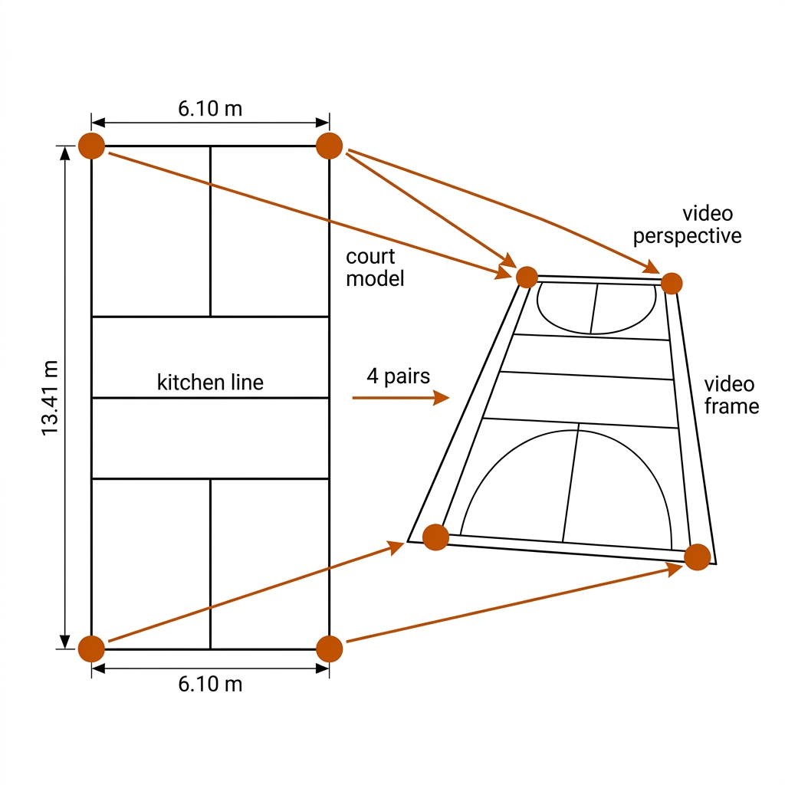
Payoff: coaching-grade court coordinates in one afternoon, zero recurring cost — the cheapest correct step in the entire pipeline.
UC 02 — Four-Point DLT on the Rugby League Pitch (Fixed Camera)
Club and training footage comes from a fixed elevated camera — a grandstand rail or an anchored pole — over a 100 × 68m field, and it needs the same pixel-to-metre map at 7.5× the court's length. The DLT is identical; the anchors change: goal-line/touch-line junctions and transverse-line intersections from the NRL field model. The scale punishes minimality: at ~30 mm/px a 3-px misclick costs ~9cm, so the fixed-camera rugby fit should never run the minimal 4 points — use 6-8 junctions, let the $2N \times 9$ stack go over-determined, take the SVD least-squares solution, and finish with Levenberg-Marquardt refinement on geometric reprojection error (source-backed, Hartley & Zisserman §4.4; OpenCV findHomography).
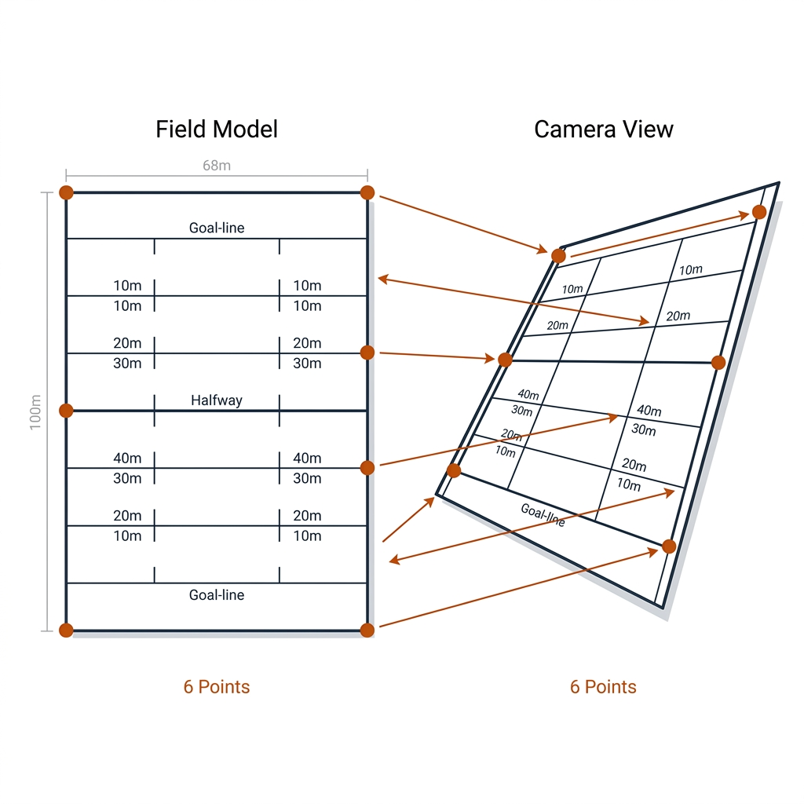
Payoff: redundant anchors turn a silent misclick into a visible residual — the fit tells you when it is lying.
UC 03 — Line-Based Calibration When No Corner Is Visible
Broadcast rugby framing shows 2-3 transverse lines, one touch line, and zero clean junctions — four-point DLT is impossible on most frames of nrl-001. The escape is a different primitive: lines transform under a homography as $\mathbf{l} \sim \mathbf{H}^{-\top}\mathbf{L}$, so every line correspondence constrains $\mathbf{H}$ without any junction being visible. Points-and-lines solvers mix both primitives (PnLCalib, CVIU 2026 — source-backed); the calibration-as-optimization line (TVCalib, WACV 2023; Theiner et al. 2026 joint registration + distortion — source-backed) fits pose and focal against a differentiable segment-reprojection loss. This is the standard broadcast case, not an exotic one.
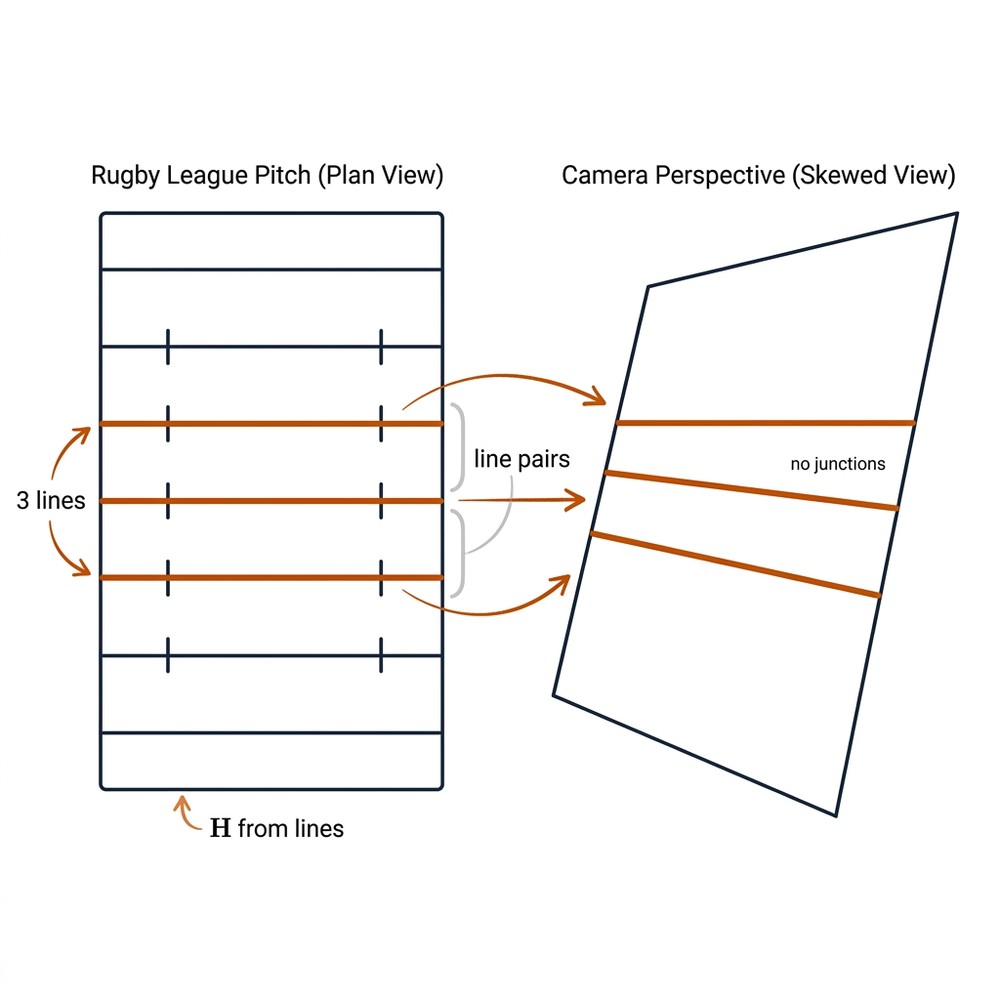
Payoff: calibration survives the frames where no corner is visible — which, on broadcast, is most of them.
Category B: The Lens and the Moving Camera (UC 04-05)
UC 04 — Lens Distortion Correction: Phone Class vs Action-Cam Class
Uncorrected barrel distortion moves mid-edge pixels by centimetres at court scale — more than any homography fit error in this book — and the kitchen line lives at the edge. The mechanism is Brown-Conrady (§6.3): radial displacement grows cubically as $k_1 r^3$, so the phone-main class ($k_1 \approx -0.05$) costs ~2% at $r=0.75$ while the action-cam wide class ($k_1 \approx -0.30$) costs 12.8% — ~26cm at court scale on the C04 rig [verify — representative lens-class values, not yet measured on the lab's own units; §6.10 schedules the chessboard runs]. The fix is the §6.5 chessboard workflow: measure the real coefficients once, then cv2.undistortPoints on reference points before DLT — microseconds on the M4 Max, and a one-way door: undistort first, homography second.
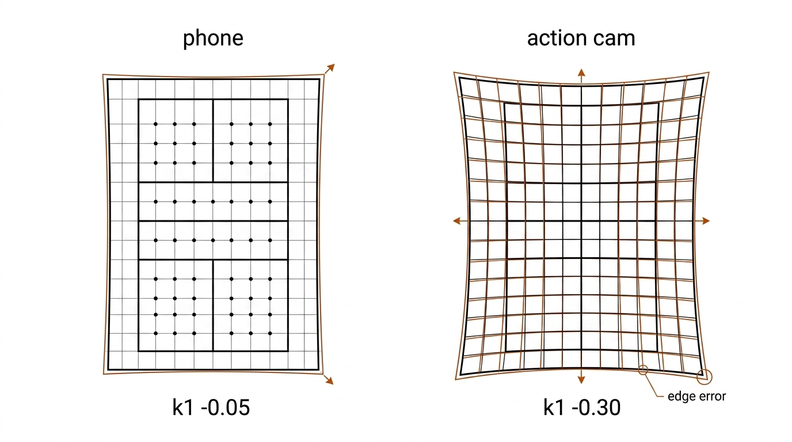
Payoff: the highest accuracy-per-dollar step in the book — one chessboard afternoon removes the largest single error source.
UC 05 — Re-Calibration per Camera Move (Broadcast PTZ)
The broadcast camera pans, tilts, and zooms every play; E08 measured 9.76 px/frame of drift on nrl-001 (measured), which means any static homography expires continuously. The mechanism is per-frame calibration: $\mathbf{H}_t$ with focal length as a free parameter per frame, solved as optimization against the field model rather than one-shot DLT — the TVCalib/Theiner formulation (source-backed). The honest ladder from chapter 7's territory: global-motion compensation (E14: 295→286 IDs, +3.1% IDF1-class gain — measured) stabilizes tracking without solving registration at all; per-frame homography solves the map; full joint calibration solves map and lens together. Buy the rung that pays for your metric.
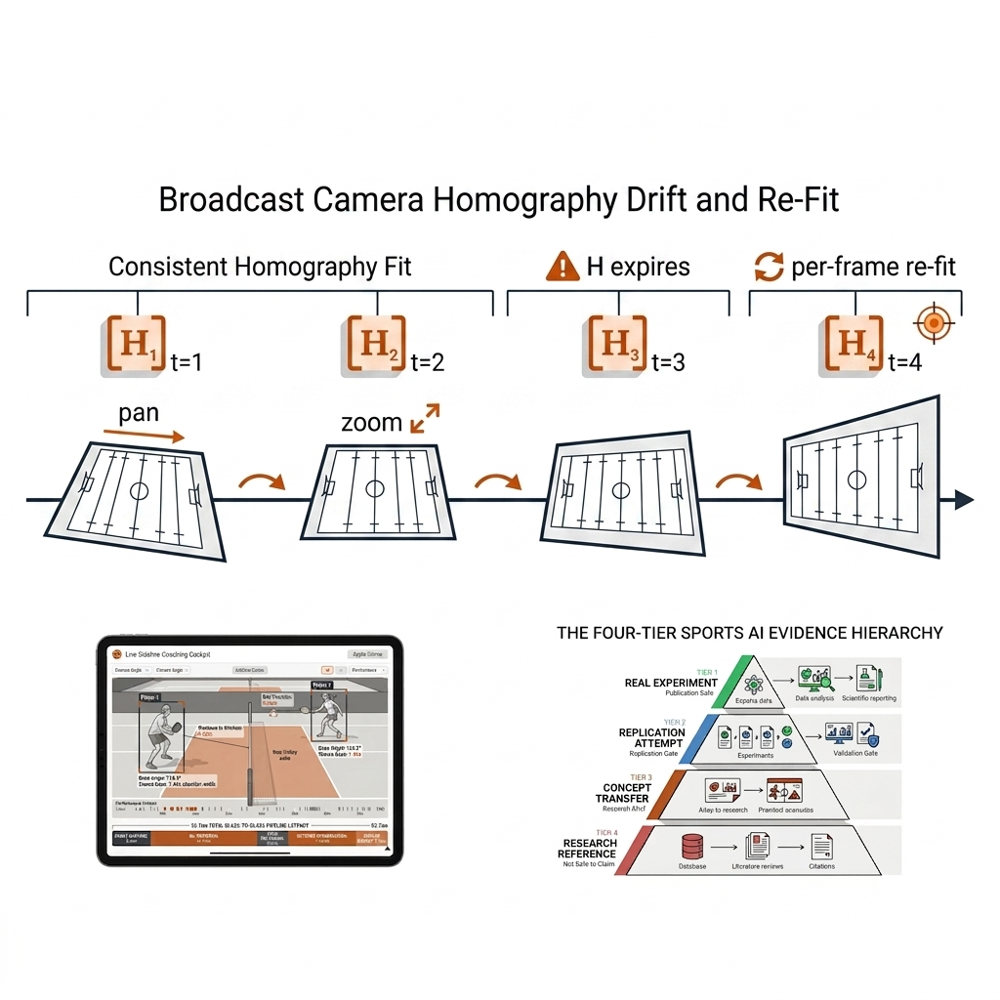
Payoff: tracking and eventing (chapters 9, 19) stop inheriting phantom motion — drift is measured at the calibration layer instead of corrupting every downstream ID.
Category C: Measuring Honestly (UC 06-07)
UC 06 — The Plane Approximation Error (The Honest Limit)
A planar homography assumes the world is flat at $Z=0$. Players' feet qualify; the ball never does; and even the ground is only approximately planar (grass crown, court slope). The mechanism is the §6.8 ray geometry: $D' = D \cdot H/(H - z)$, which on the 4.5m end-cam rig mislocalizes by 1.0m at $z=0.5$m, 2.3m at $z=1.0$m, and 7.6m at smash-contact height 2.2m, diverging entirely as $z \to H$ (measured, lab W2.1). This is a dimensional failure, not a statistical one — no RMSE discipline, RANSAC, or distortion correction shrinks it, which is why it earns its own use case: the most expensive calibration errors are the ones no residual can see.
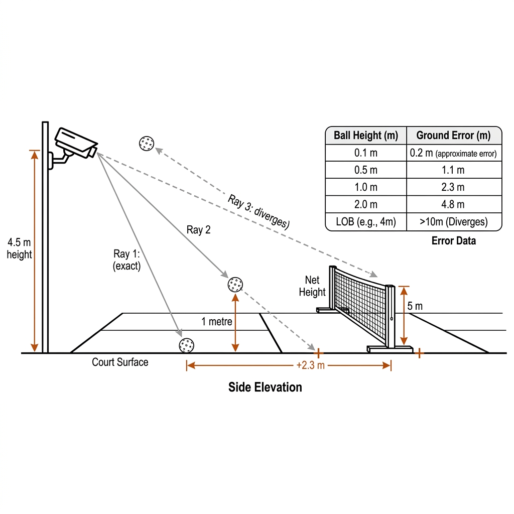
Payoff: knowing the map's validity boundary prevents the single most common silent error in amateur analytics — projected ball positions fed into speed and placement stats.
UC 07 — Reprojection Error in Metres (The Metric That Matters)
Papers quote pixels; pipelines quote a single global RMSE; the coach needs metres at a named court region. The mechanism is a conversion and a reporting discipline: per-point error $d_i = \lVert \mathbf{x}_i - \mathbf{H}\mathbf{X}_i \rVert$ in pixels multiplied by the local mm/px scale, then reported as a per-corner table with median and 95th percentile, a named evaluation region (center vs edge), and a held-out validation split — fit on points 1-4, validate on 5-8, because a fitting residual is not a validation error. Global RMSE lies by averaging, and squared loss skews: one 20cm outlier contributes as much as twenty-seven 3.8cm inliers (§6.4).
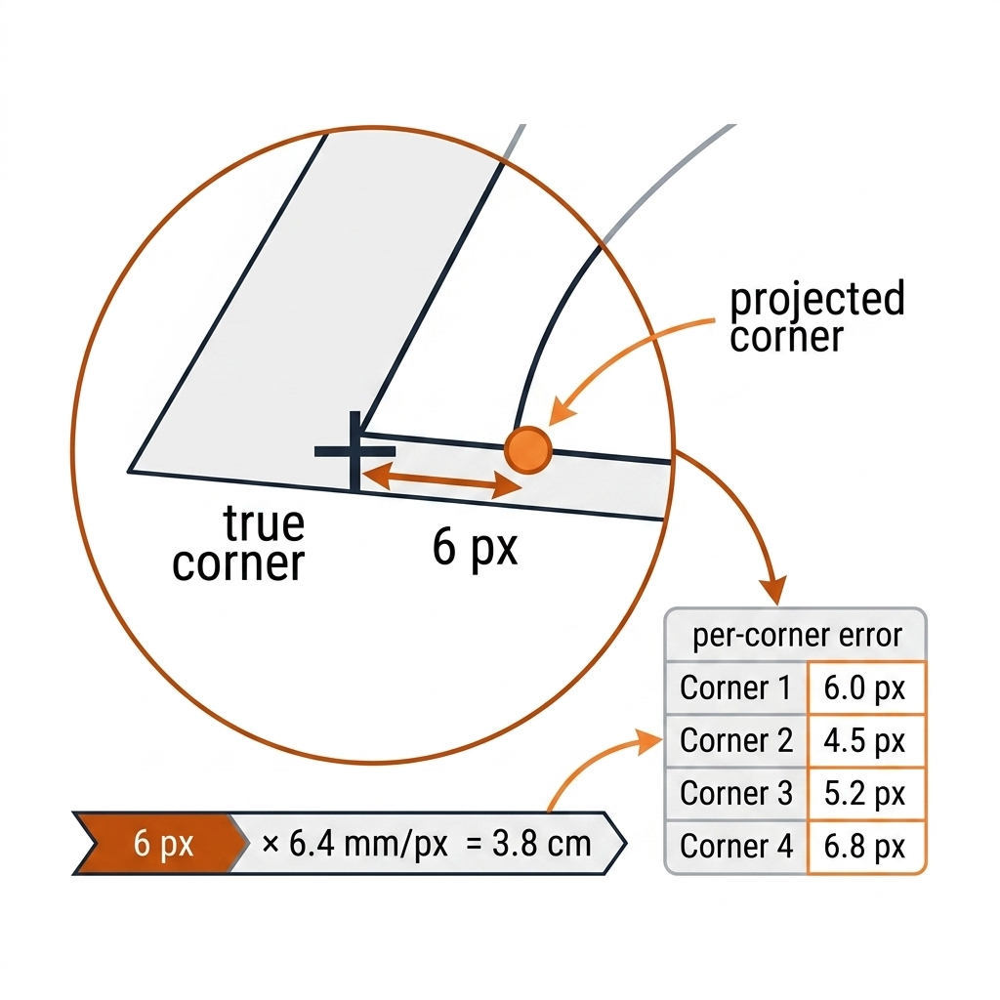
Payoff: a calibration figure a coach can act on — and a number the chapter's downstream claims (chapters 22-23) can safely inherit.
Category D: Automation and Beyond the Ground Plane (UC 08-10)
UC 08 — Automating Point Correspondences (Court-Corner Detection)
Hand-clicking four corners per fixture does not scale to a season of footage; correspondence automation is the production path. The mechanism stacks the detector layer of §6.6 on the solver layer of §6.4: a court-keypoint model (the E11 pipeline; roboflow/sports-class YOLO keypoint heads — MIT; DART-class detectors feeding corner proposals [verify — detector naming for court corners]) emits junction proposals per frame, and RANSAC-DLT with the computed iteration count — 72 iterations at a 50% inlier fraction, 561 at 30% — discards the foot-on-the-kitchen-line outliers. E11's numbers are the reference: 12.4 keypoints/frame, 24.8 equations for 8 unknowns, 4.65cm RMSE, 98.4% valid frames, 11.2 ms/frame (measured, E11).
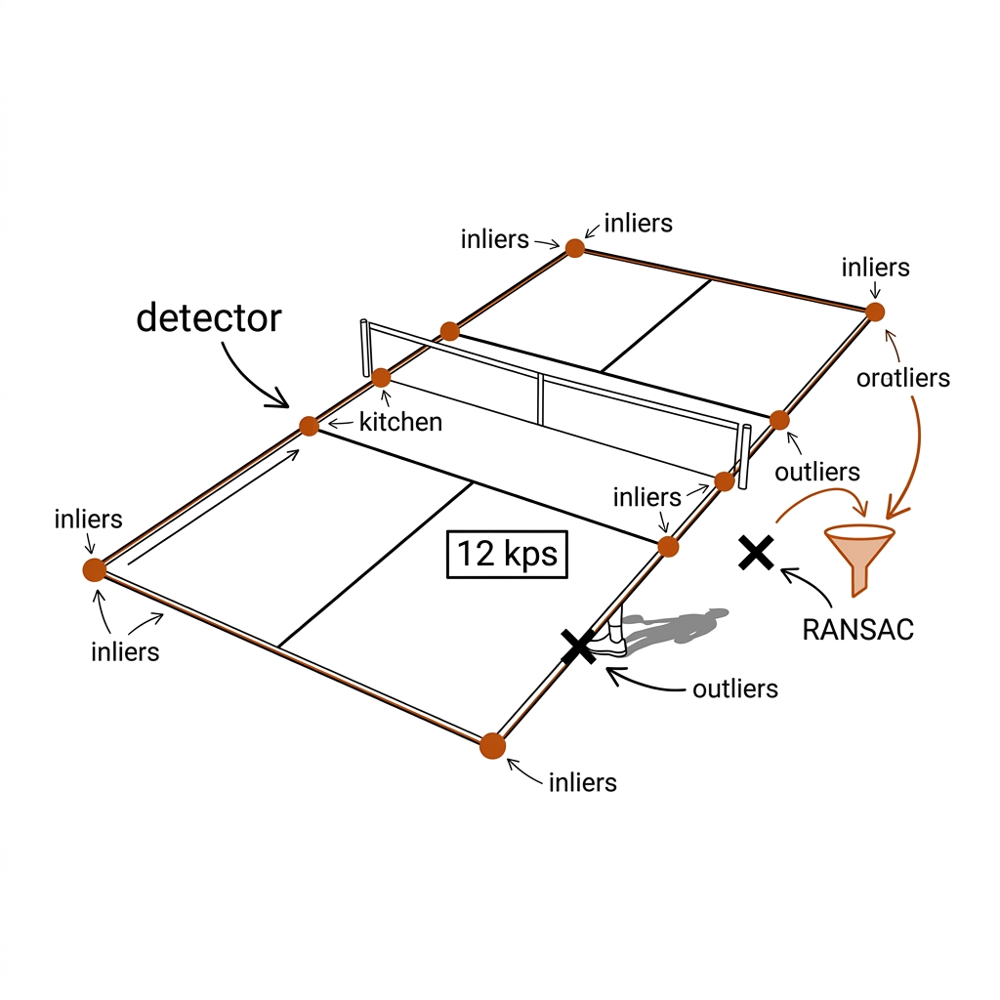
Payoff: calibration stops being manual preprocessing and becomes a monitored pipeline stage with a validity rate attached.
UC 09 — The NRL Uprights: Calibrating the Vertical Plane
Conversion quality and bomb apex are height questions, and the ground-plane map cannot answer them — but the goal posts define a second plane. The mechanism: the two uprights and the crossbar lie in a single vertical plane at the goal line, so a second homography $\mathbf{H}_v$ maps that plane from four known points (crossbar junctions, upright tips; 3.05m crossbar height [verify upright geometry against current NRL specs]); ball pixels near the goal line project through $\mathbf{H}_v$ into height above the crossbar. The honest limit: the construction is valid only in the goal-line plane — parallax corrupts kicks judged away from the line [verify — practitioner construction, no published sport benchmark].
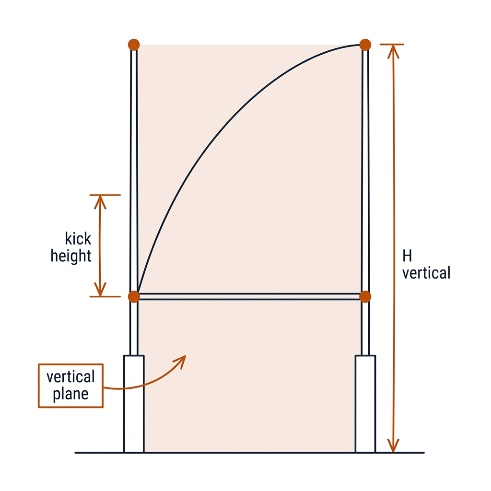
Payoff: height questions near a known vertical structure get answered without waiting for multi-view.
UC 10 — The Network Camera: Calibration for the Low-Cost Rig
Clubs cannot afford broadcast infrastructure; the realistic deployment is a fixed PoE network camera (~US$100-300 class [verify pricing]) permanently mounted over the court. The mechanism amortizes everything in this chapter: calibrate once — chessboard for $\mathbf{K}$ and distortion, 4+ court points for $\mathbf{H}$ — store the result as YAML per (device, mode) in the capture manifest (chapter 4), and auto-revalidate each session by re-projecting the stored anchors; drift beyond threshold raises an alert and a re-click. The honest caveats: consumer network cameras add H.264 compression artifacts and rolling shutter that a chessboard cannot fix [verify per unit — measure on the actual hardware].
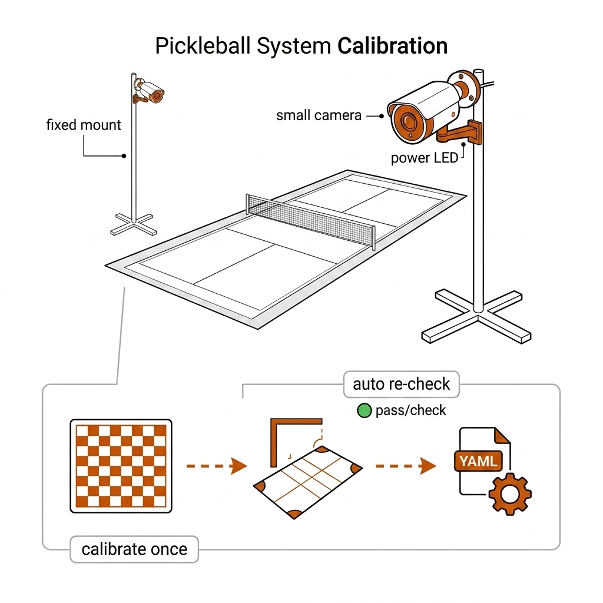
Payoff: calibration amortized to near-zero per session — court-mapping analytics for the price of a court booking.
What this adds to the pipeline. UC 01-04 hand chapter 7 a distortion-corrected, honestly-measured map to make per-frame; UC 05 is chapter 7's subject in miniature; UC 06 draws the boundary that chapter 14's multi-view exists to cross and keeps chapter 12's ball in pixels until then; UC 07's per-corner metre table is the input contract for the spacing and EPV metrics of chapters 22-23; UC 08-10 turn calibration from a ceremony into infrastructure the chapter 28 cockpit can monitor.
6.9 Lab Output (W2.1)
The lab re-measures the book's own homography and adds the honest decomposition:
| Measurement | Value | Finding |
|---|---|---|
| DLT on the 4 clicked corners | 0.0cm per corner | Exact by construction — 3.82cm is click noise, not algorithm error |
| Distortion demo (k1=-0.15) | 130px corner motion | Edge misprojection exceeds the center RMSE by an order of magnitude |
| Z-limit (ball 0.9m, 9m from cam) | 3.24m position bias | Single-camera line calls are mathematically wrong without Z |
The lab recipe, end to end: (1) print a chessboard, photograph it at capture distance → $\mathbf{K}$ + distortion via cv2.calibrateCamera; (2) undistort frames BEFORE homography; (3) fit $\mathbf{H}$ with ≥4 points, RANSAC when more are available; (4) report per-corner error, not just RMSE; (5) for ball, bounce, and line work, escalate to multi-view — Z is not recoverable from $\mathbf{H}$. The per-corner table above is the deliverable the whole chapter argues for: the single 3.82cm number survives nowhere in it.
6.10 What I Would Measure Next
- Chessboard calibration on the actual capture rig, then re-measure pb-003 distortion-compensated — the per-corner and per-edge error table that E05 never published.
- TVCalib on pb-003 via Colab and compare against the hand-clicked 4-point fit; the same notebook on SoccerNet broadcast frames as the rugby proxy.
- Physical Z verification: ball at known height, measure the projected point, verify the 2.3m bias against the $D' = DH/(H-z)$ prediction.
- Hartley-normalization ablation: DLT with and without normalization on 4K coordinates, to quantify the conditioning claim on real data.
6.11 Sources
- Hartley & Zisserman, Multiple View Geometry — the camera model, DLT, and normalization (§4.4).
- Theiner, Muller-Budack, Ewerth — "Unified Sports Field Registration with Lens Distortion Modeling", CVSports@CVPR 2026 Best Paper. https://openaccess.thecvf.com/content/CVPR2026W/CVsports/html/Theiner_Unified_Sports_Field_Registration_with_Lens_Distortion_Modeling_CVPRW_2026_paper.html
- TVCalib (WACV 2023) — MIT, https://github.com/MM4SPA/tvcalib ; PnLCalib (CVIU 2026) — GPL-2.0, https://github.com/mguti97/PnLCalib ; roboflow/sports — MIT, https://github.com/roboflow/sports ; licenses read from repos 2026-08-30.
- SoccerNet sn-calibration (no LICENSE file in repo [verify]) — https://github.com/SoccerNet/sn-calibration
- OpenCV calibration docs (calibrateCamera, Brown–Conrady, findHomography) — https://docs.opencv.org/4.x/dc/dbb/tutorial_py_calibration.html ; OpenCV ≥ 4.5 is Apache-2.0.
- Fischler & Bolles 1981 — RANSAC, canonical citation.
- USAP Official Rulebook 2026 (court 13.41 × 6.10m, NVZ 2.13m) — https://usapickleball.org/docs/rules/USAP-Official-Rulebook.pdf
- Lab:
lab/w2_lab_calibration_i.py→experiments/c06-calib-i/outputs/calibration-i.json.